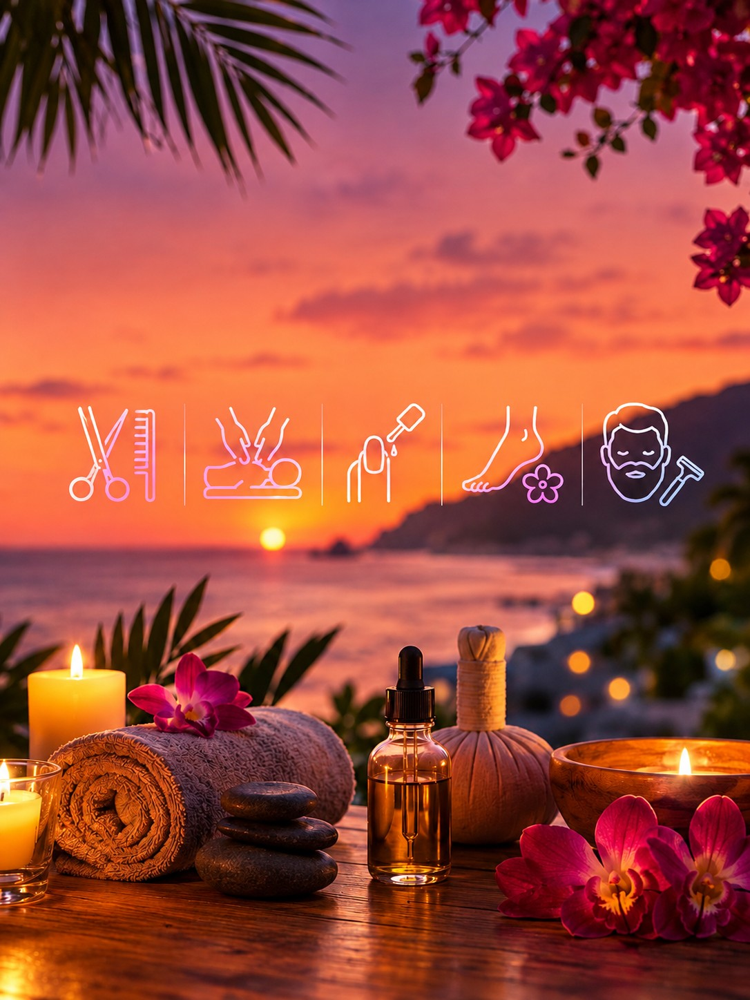

Op de lijst
Nsalon van Nikos Georgiadis (ook heren en baard), Giannis Nails, Artemis Hamam, Afrodite-massage en Touch of Beauty. Massages aan het strand staan bij de excursie Massage.

Knippen, nagels, hamam en massage. De gids noemde deze zaken. Prijzen staan er niet bij.
Nsalon van Nikos Georgiadis (ook heren en baard), Giannis Nails, Artemis Hamam, Afrodite-massage en Touch of Beauty. Massages aan het strand staan bij de excursie Massage.